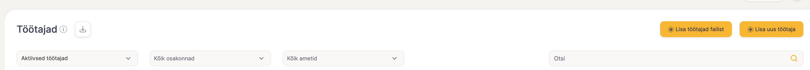
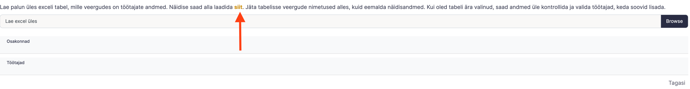
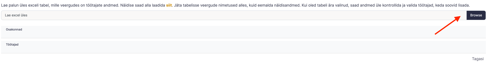

Edit help articles just like any other document. Create headings, bullets, numbered lists, a table of contents, etc. Drag and drop images or embed videos.
Töötajad saab üles laadida Exceli failiga või ühe kaupa sisestades
Exceli failiga laadides
Mine “Töötajate” vaatesse ning vali sealt “Lisa töötajad failist” 
Lae alla Exceli näidis, mille saad enda ettevõtte töötajate andmetega täita. 
Sisesta oma töötajate andmed järgides täpselt sama formaati (eriti numbrite sisestamisel), mis on Excelis ette näidatud. Kindlasti tuleb täitsa kohustuslikud väljad.
Lisaks töötajatele saab lisada ka ettevõtte struktuuri Excelisse ning üles laadimisel on teil samasugune struktuur olemas.
Struktuuri osa leiad Exceli näidise teiselt vahelehelt. Sinna on vaja sisestada esimesse tulpa osakond ja teise tulpa selle sama osakonna ülemosakond. Kui ülemosakond tühjaks jätta, siis loeb süsteem selle kõige kõrgemaks struktuuri osaks.
Kui töötajad on Excelisse sisestatud, siis lae Excel üles. 
Kõik töötajad, kes on korrektselt Excelisse sisestatud on nüüd nimekirjana Sinu ees. Kui keegi on puudu, siis ilmselt tuleb vaadata üle, kas numbrite ja nime formaat on õigesti sisestatud.
Pane tähele!
💡
Kui importimisel kuupäevad näidatakse 01.01.001, siis on Excelis kuupäeva formaat vale.
Üks haaval töötajate lisamine
Mine töötaja vaatesse ning vajuta “Lisa uus töötaja”. Nupule klikates lihtsalt täida väljad.
Kui töötaja ametikohta või osakonda süsteemis pole, siis süsteem pakub “+lisa uus amet” või “+Lisa uus osakond”. Uue osakonna struktuuri saad muuta “Osakondade” all.
💡
Kui isikukaitsevahendite vajadus ja tervisekontrolli vajadus on välja lülitatud töötaja profiilis, siis ka Riski Indeksis seda ei kajastata.
💡
Kui töötaja ametikohta või osakonda süsteemis pole, siis süsteem pakub “+lisa uus amet” või “+Lisa uus osakond”. Uue osakonna struktuuri saad muuta “Osakondade” all.
Juhendite lisamine
💡
Juhenditena võid käsitleda ükskõik milliseid dokumente, mida soovid töötajatele tutvustada ja neilt kinnitust saada.
Valitud ametikohtadele on see konkreetne juhend kohustuslik ning süsteem lisab selle töötaja juhendamiste paketti. Vt Töötajate juhendamine
Juhendaja vali siis, kui Sa tahad, et juhendaja saaks teavituse töötaja poolt läbitud juhendamisest ning kui juhendaja peab selle ka omaltpoolt kinnitama.
Juhendile saad lisada video linke (youtube, vimeo ja loom)
Adding instructive screenshots, GIFs, or videos is a snap.
Drag and drop any image into the page.
Type /video to embed a video file of your choosing (including from YouTube or Vimeo).
Here's a handy example showing how to add a table of contents:
{kind=link}
{kind=link}
{kind=link}
{kind=link}
{kind=link}
{kind=link}
{kind=link}
{kind=link}